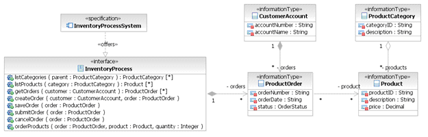

| Artifact: Component Specification |
 |
|
The Component Specification details the responsibilities and key characteristics for individual components. These details allow developers to create an executable architecture to validate the architectural approach. |
| Container Artifact | ||
|---|---|---|
| Roles | Responsible: | Modified By: |
| Tasks | Input To: | Output From: |
| Main Description | This artifact specifies the details of a component identified in the Component Model. The specification shows the interfaces offered and used by the component, identifies where business rules are placed, and details the operations and their signatures for each interface. Component Interfaces – An interface specifies one or more operation signatures and is both offered and used by a component. Offering an interface means the component makes the interface available for other components to use. Each interface provides a unique and well-defined set of operations. Hiding the structure of a component and its data behind an interface allows that data to be changed without affecting how the interface is used. The actual composition of that data may change, but the interface that provides access to that data is fixed. Interfaces also describe the state of a component. Business Rules – Business Rules dictate the behavior of a system, and the component specification defines how the system implements the business rules. For example, a business rule may state that Internet transactions for an on-line order can not exceed $1000 for a given account. A component that manages account transactions may define an on-line transactions interface that implements this business rule. Operations – Fully specified Component Specifications assign operations and operation signatures to the interfaces and may define pre- and post-conditions on the operations. Pre- and post-conditions specify the effect of an operation without prescribing an algorithm or implementation. A post-condition specifies the effect of the operation on the components data or state. A pre-condition is the condition under which the operation guarantees that the post-condition is true. |
|---|---|
| Brief Outline |
The Component Specification defines the following information for each component:
|
| Examples |
|---|
Points to consider when deciding whether to use a Component Specification:
Component Specifications tend to be useful in companies where systems live for decades, or where there are many
variants of the system. |
| Impact of not having | The absence of this work product may result in:
|
|||||||||||||||||||||||||||
|---|---|---|---|---|---|---|---|---|---|---|---|---|---|---|---|---|---|---|---|---|---|---|---|---|---|---|---|---|
| Reasons for not needing |
A Component Specification may not be necessary when:
|
|||||||||||||||||||||||||||
| Representation Options | Notation
The Component Specification consists of both a textual definition and visual model of a component's responsibilities,
characteristics, and interfaces.
The textual definition includes the following information:
The visual model consists of three UML diagrams:
Component Specification Diagram
A component specification diagram shows a single component with the interfaces it uses as well as the ones it
offers.
Interface Responsibility Diagram An Interface Responsibility Diagram the information managed each interface and brings dependencies to the surface. It shows an association between interfaces and entities from the logical data model (LDM). It does not show information or state that the components manage through the interfaces.  Interface Specification Diagram An Interface Specification Diagram depicts the information model of an interface. It shows all of the information types that are needed by the interface. These types correspond to dynamic or "in-flight" data. They are not the same as persistent data, but they usually map to the underlying entities of the logical data model from which they are derived. |


| Checklists |
|---|
Licensed Materials - Property of IBM |